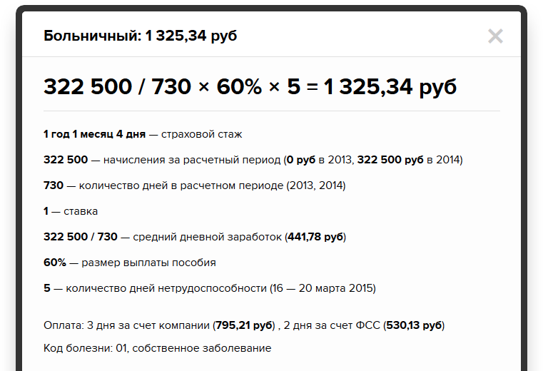
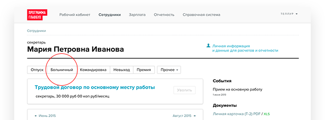
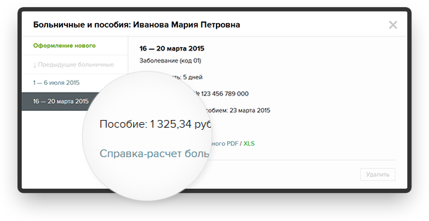
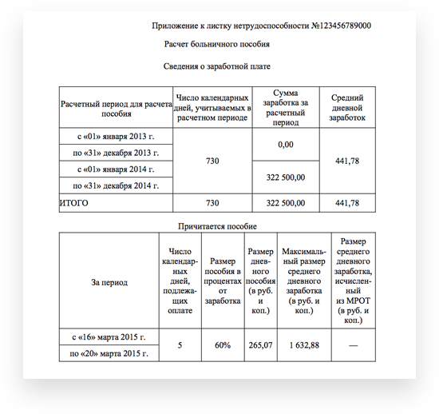
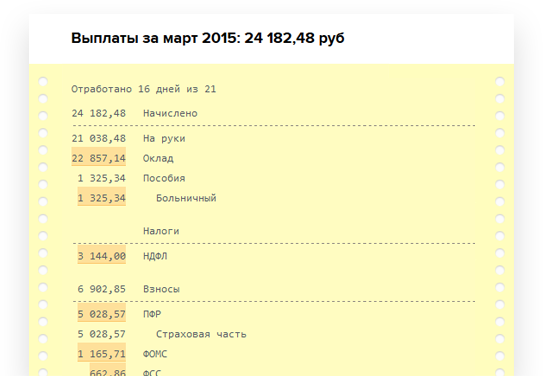
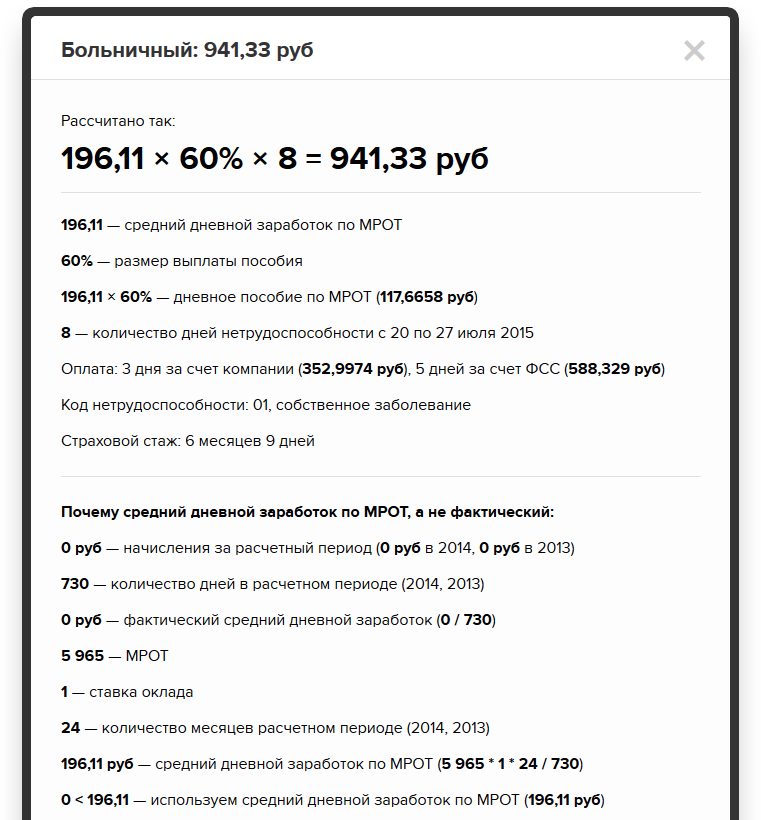

Расчет и оформление
выплат сотрудникам
выплат сотрудникам
Как правильно рассчитать
больничный сотруднику
в 2015 году.
Пошаговый алгоритм расчета пособия по временной
нетрудоспособности с формулой и примерами.
Способ сэкономить время при расчете больничных.
нетрудоспособности с формулой и примерами.
Способ сэкономить время при расчете больничных.
1
Определите страховой стаж сотрудника
Размер выплаты больничного зависит от страхового стажа — общего количества лет,
которые проработал человек.
100% размера пособия полагается, если страховой стаж 8 лет и больше;
80% — при стаже от 5 до 8 лет;
60% — если стаж меньше 5 лет.
100% размера пособия полагается, если страховой стаж 8 лет и больше;
80% — при стаже от 5 до 8 лет;
60% — если стаж меньше 5 лет.
ст. 7 Закона от 29 декабря 2006 г.
№ 255-ФЗ
№ 255-ФЗ
2
Сложите все начисления за 2013 и 2014 годы
Возьмите все выплаты сотруднику, с которых выплачивались взносы в ФСС,
но не больше облагаемого взносами лимита:
— 624 000 руб. за 2014 год;
— 568 000 руб. за 2013 год.
но не больше облагаемого взносами лимита:
— 624 000 руб. за 2014 год;
— 568 000 руб. за 2013 год.
П. 1 постановления Правительства РФ
от 30 ноября 2013 г. № 1101
П. 1 постановления Правительства РФ
от 10 декабря 2012 г. № 1276.
от 30 ноября 2013 г. № 1101
П. 1 постановления Правительства РФ
от 10 декабря 2012 г. № 1276.
3
Определите средний дневной заработок сотрудника
Важно:
длительность расчетного периода для пособия по нетрудоспособности
всегда 730 дней, никакие дни из расчета не исключаются
всегда 730 дней, никакие дни из расчета не исключаются
Средний дневной
заработок
заработок
=
Начисления сотрудника за 2013-2014 годы
в пределах лимита
в пределах лимита
÷
730
Длительность расчетного периода
Ч. 1 и 3 статьи 14 Закона от 29 декабря
2006 г. № 255-ФЗ
2006 г. № 255-ФЗ
4
Дневной заработок для расчета итоговой суммы пособия
Сравните фактическую величину дневного заработка с минимальным и максимальным ограничением.
Фактический
дневной заработок >
больше Максимального
дневного заработка ⇒
берите Максимальный дневной заработок
для итоговой суммы пособия
дневной заработок >
больше Максимального
дневного заработка ⇒
берите Максимальный дневной заработок
для итоговой суммы пособия
Фактический
дневной заработок <
меньше Минимального
дневного заработка ⇒
берите Минимальный дневной заработок
для итоговой суммы пособия
дневной заработок <
меньше Минимального
дневного заработка ⇒
берите Минимальный дневной заработок
для итоговой суммы пособия
В остальных случаях берем фактический дневной заработок для итоговой суммы пособия.
Дневной заработок для расчета пособия по временной нетрудоспособности в 2015 году
Максимальный — 1632,88 руб = 568 000 руб за 2013 год + 624 000 руб за 2014 год ÷ 730 дн
Минимальный — 196,11 руб = 5 965 руб × 24 мес ÷ 730 дн (5 965 руб — это МРОТ в 2015 году)
Максимальный — 1632,88 руб = 568 000 руб за 2013 год + 624 000 руб за 2014 год ÷ 730 дн
Минимальный — 196,11 руб = 5 965 руб × 24 мес ÷ 730 дн (5 965 руб — это МРОТ в 2015 году)
5
Определите итоговую сумму пособия
Сумма пособия
по временной
нетрудоспособности
по временной
нетрудоспособности
=
Дневной
заработок
заработок
÷
Размер пособия в процентах
от дневного заработка
(100%, 80%, 60%)
от дневного заработка
(100%, 80%, 60%)
×
Количество календарных
дней болезни
дней болезни
Посмотреть пример
Иванова Мария Петровна на больничном с 16 по 20 марта 2015 года.
Работает в должности
секретаря-референта с 10 февраля 2014 года. Первое место работы.
Страховой стаж — меньше 5 лет. Размер выплаты пособия составит 60%.
Начисления за 2013 год — 0, за 2014 — 322 500 руб (300 000 за март-декабрь 2014 + 22 500
за 15 отработанных дней в феврале 2014)
Средний дневной заработок: 322 500 руб ÷ 730 = 441,78 руб.
Это меньше максимального дневного заработка и больше максимального. Значит, для итоговой суммы
пособия нужно взять фактическую величину дневного заработка, 441,78 руб.
441,78 руб × 60% × 5 дней болезни = 1 325, 35 руб
795,21 руб — 3 дня болезни оплачиваются за счет компании
530, 14 руб — 2 дня за счет ФСС
секретаря-референта с 10 февраля 2014 года. Первое место работы.
Страховой стаж — меньше 5 лет. Размер выплаты пособия составит 60%.
Начисления за 2013 год — 0, за 2014 — 322 500 руб (300 000 за март-декабрь 2014 + 22 500
за 15 отработанных дней в феврале 2014)
Средний дневной заработок: 322 500 руб ÷ 730 = 441,78 руб.
Это меньше максимального дневного заработка и больше максимального. Значит, для итоговой суммы
пособия нужно взять фактическую величину дневного заработка, 441,78 руб.
441,78 руб × 60% × 5 дней болезни = 1 325, 35 руб
795,21 руб — 3 дня болезни оплачиваются за счет компании
530, 14 руб — 2 дня за счет ФСС
Рассчитать больничный без ошибок
поможет Программа Главбух
Программа сообщит сумму пособия по временной нетрудоспособности сотрудника
и предоставит подробное объяснение расчета. Так же, как в примере

и предоставит подробное объяснение расчета. Так же, как в примере
В Программе Главбух больничный
оформляется за пару секунд
Один раз указываете информацию о сотруднике. Страховой стаж программа считает сама:
сервис включит все время работы сотрудника в компании (до даты начала болезни)
и все прошлые периоды занятости из трудовой книжки.

сервис включит все время работы сотрудника в компании (до даты начала болезни)
и все прошлые периоды занятости из трудовой книжки.
Программа определит сумму больничного,
заполнит справку-расчет
заполнит справку-расчет
Вам достаточно ввести данные из больничного листка


Программа Главбух в момент расчета заполнит нужные документы
В справке-расчете — вся информация по пособию
Программа перенесет сумму больничного
в расчетный листок сотрудника
в расчетный листок сотрудника
Все выплаты работнику за месяц: больничный, зарплата
за остаток месяца, взносы и НДФЛ. Нажмите на выделенное
оранжевым число и отроется объяснение расчета.
за остаток месяца, взносы и НДФЛ. Нажмите на выделенное
оранжевым число и отроется объяснение расчета.

Программа Главбух знает обо всех
условиях расчета больничного
Например, когда пособие по временной нетрудоспособности
рассчитывается из минимума, т.е. из МРОТ
рассчитывается из минимума, т.е. из МРОТ
| Ситуация | Пример | Как считать пособие |
|---|---|---|
| В расчетном периоде не было заработка |
Был отпуск по уходу за ребенком или отпуск Без содержания |
Средний дневной заработок принимается равным МРОТ |
| Средний месячный заработок ниже МРОТ | У сотрудника маленькая зарплата | Пособие выплачивается в размере, не превышающем МРОТ за полный календарный месяц |
| Общий стаж сотрудника менее 6 месяцев | Молодой сотрудник только начал карьеру | |
| Есть основания для снижения размера пособия | Нарушение больничного режима или неявка на осмотр к врачу |
Онлайн-сервис подробно объяснит алгоритм расчета в сложной ситуации

Что еще умеет Программа Главбух
Считать зарплату, командировочные,
больничные и остальные выплаты
больничные и остальные выплаты

Заполнять кадровые документы
в момент расчета
в момент расчета

Начислять НДФЛ, взносы и готовить
отчетность: 4-ФСС, РСВ-1, 2-НДФЛ
отчетность: 4-ФСС, РСВ-1, 2-НДФЛ
Давать рекомендации по зарплатному
и кадровому учету
и кадровому учету